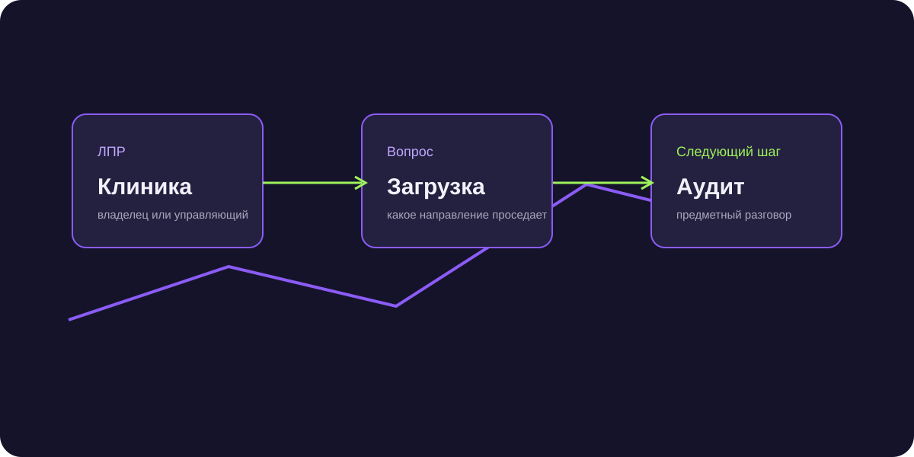

Лиды для стоматологий: как выходить на клиники через конкретную экономику
Лиды для стоматологий искали через экономику клиники. Общий оффер «настроим рекламу» редко становится причиной ответа, поэтому разговор начинался с загрузки врачей, направления и стоимости пациента.

Короткий ответ
AI выяснял, кто принимает решение, какое направление нужно догрузить и что клиника уже пробовала. Менеджер получал контекст и мог начать разговор с ситуации бизнеса.
Почему общий оффер не работает
У клиники может быть хорошая загрузка по терапии и свободные слоты в ортопедии или имплантации. Поэтому вопрос «нужны ли вам пациенты?» слишком общий и не показывает, где именно находится задача.
Кого искали
В базу входили владельцы стоматологий, управляющие, маркетинг-директора и руководители небольших сетей. Важно было попасть к человеку, который может обсуждать загрузку клиники и маркетинговый бюджет.
Как строили разговор
Вместо презентации задавали короткий вопрос по текущей ситуации: есть ли направления, которые нужно догрузить, устраивает ли стоимость пациента и какие каналы работают сейчас.
После ответа AI уточнял город, формат клиники, приоритетное направление, наличие маркетолога или подрядчика и готовность обсудить аудит.
Сформулированную точку роста
Кто отвечает за решение, какая клиника, какое направление проседает, что уже пробовали и какой следующий шаг согласован.
Результат
Проект дал 58 лидов при CPL около 840 ₽. Следующим шагом для заинтересованных клиник становился аудит или предметный созвон, а не общая презентация агентства.